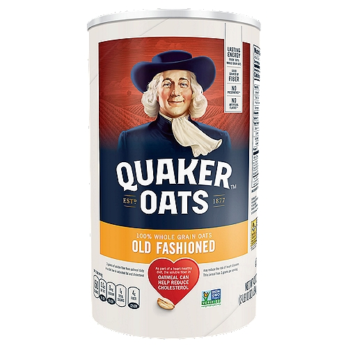

<h1>Oatmeal</h1>

<body>
<p>Oat meal is easy and simple to make. When I'm in a hurry oatmeal is my go to meal.</p>
<h2><em>Ingredients</em></h2>
    <ul>
        <li>Oatmeal</li>
        <li>Milk</li>
        <li>Sugar</li>
    </ul>
<h2><em>Steps</em></h2>
    <ol>
        <li>Boil 1/2 Water</li>
        <li>Dump 1/4 of the water onto your oatmeal</li>
        <li>Add 1/4 milk to your oatmeal</li>
        <li>Add desire amount of sugar</li>
        <li>Enjoy</li>
    </ol>


<a href="../index.html">Return to main page</a>
</body>